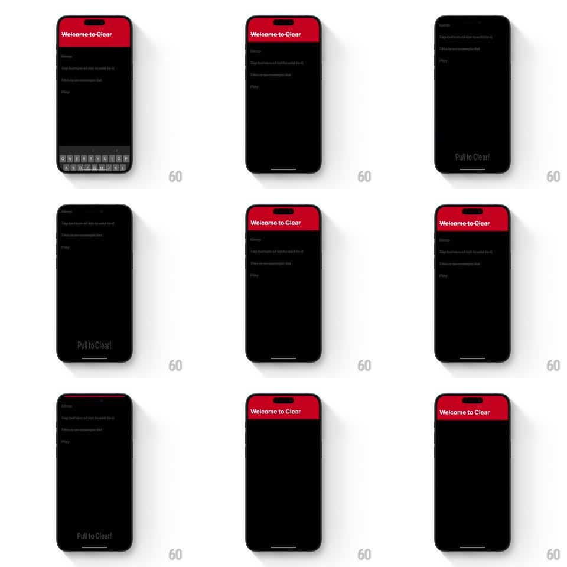

Media
Frame-by-frame

Rebuild this interaction 1:1: Clear's pull-up-to-clear gesture - pulling the list up from the bottom reveals a "Pull to Clear!" hint, and releasing past the threshold sweeps completed items away with a spring.

Rebuild this interaction 1:1: Clear's pull-up-to-clear gesture - pulling the list up from the bottom reveals a "Pull to Clear!" hint, and releasing past the threshold sweeps completed items away with a spring.
## Integration
Integration: stack-agnostic spec - springs given as stiffness/damping, timed motions as duration + curve; map every value to your framework and animation library of choice.
## Scene
Clear's dark list under a red "Welcome to Clear" header: a short task list ("Sleep", "Tap bottom of list to add to it", "Swipe an item to clear it", "Play"), some items shown as completed. A keyboard is up initially, then dismissed. Dragging the list upward from below the last item stretches a rubber-band gap at the bottom with a "Pull to Clear!" label; releasing past the threshold clears the completed items.
## Motion spec
Pattern: pull-to-clear with rubber band, gesture-driven.
- The pull tracks 1:1 up to ~80px, then resists quadratically (rubber band); the gap reveals "Pull to Clear!" fading in as tension grows (opacity tied to pull distance).
- Past the threshold (~120px effective), the label flashes and the release fires the clear: completed items sweep up and out (stagger 40ms, 250ms each, ease-in) while remaining items spring up to close the gaps (spring stiffness 350 damping 26).
- Released before the threshold, the list snaps back down (spring stiffness 400 damping 24) and the hint fades.
- The red header stays pinned; only the list body moves.
## Calibration
- The rubber-band resistance must be felt: the last 40px cost visibly more pull.
- Cleared items leave upward - same direction as the pull, selling the gesture.
## Reduced motion
Completed items fade out on release; no stretch.
## Don't miss
- The hint text lives in the stretched gap, not an overlay.
- Only completed items clear; untouched tasks hold their order.